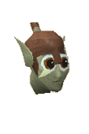

")
Dorgesh-Kaan (Members)
Warning | Introduction | Location | Points of Interest | Personalities
Quests | Defenders of the Hidden City | Miscellaneous
Quests | Defenders of the Hidden City | Miscellaneous
Warning
You must complete Death to the Dorgeshuun to gain access to Dorgesh-Kaan.
Introduction

Things might have stayed this way - the Dorgeshuun below and Lumbridge above - until the goblins stumbled into Lumbridge Castle's cellar. Now there is no turning back the tides of diplomacy, and they have opened their gates to the humans that prove themselves friendly.
Location

Once you've been there a few times, you'll discover that Oldak, in the north-west of the city, can make you moving-over-distance spheres, which will teleport you to Dorgesh-Kaan. In addition, those who have completed Another Slice of H.A.M. will be able to use the railway between Dorgesh-Kaan and Keldagrim.
Points of Interest

The common Dorgeshuun foods are sold by traders in the market, while the goblin gourmets are more than eager to start enjoying the delicacies from the surface. If you want to make a few coins, you might like to consider taking some of your own food down and offering it for sale, although you will need to get permission from the Council first. To get permission, simply have a chat to the marketplace head, who will tell you which member of the council you need to speak to.
Some of the traders offer special equipment of cave goblin devising, most notable of which is the frog-leather armour, available from Reldak.
To the south of the city is a large Agility course built above a second cavern filled with Slayer creatures of varying danger.
Sometimes you will receive a long bone or a curved bone from some of the larger creatures of RuneScape. If you take them to Barlak's store in the west of Dorgesh-Kaan (rather than burying them), he will offer payment as well as teaching you a bit about Construction (provided you already have level 30 Construction or higher).
The Dorgeshuun devotion to peaceful pastimes can be seen especially clearly in the presence of a large school in the upper level. Here, Mernik teaches her charges the history of their civilisation and aims to imbue them with the peacefulness that distinguishes the cave goblins from their barbaric cousins on the surface.
In the north of the city, looking over the market, is the council's headquarters. From here, the elected representatives debate such essential topics as water supply, defence of the city and the arrival of visitors from the surface. The council scribe who can usually be found there has spent his life recording the complete history of the Dorgeshuun, and is well worth visiting to discover the stories that have moulded the cave goblins' life.
Personalities
![[image: ur-tag]](../../img/main/kbase/npc/area_guides/chathead/ur_tag.gif "ur-tag")
Ur-tag is the current elected head of the cave goblins. Unlike most societies in RuneScape, no single figure rules over all the Dorgeshuun, and Ur-tag is merely the head of the elected council. Ur-tag is one of the oldest of the cave goblins, but was also one of the first to see the lands above when he went to sign the treaty with Duke Horacio.
|
![[image: zanik]](../../img/main/kbase/npc/area_guides/chathead/zanik1.gif "zanik")
A hero to many of the cave goblins, and likely a fool to others, Zanik's natural adventurousness and curiosity led to her being chosen by the Dorgeshuun council to be the first cave goblin to venture into the world above. Given that none had seen the grassy fields or other goblins (or anything aside from their cave systems) for almost three thousand years, she was understandably awed and confused.
|
|
| Ur-tag is usually within an easy distance of the council chambers on the upper level of the city. | Zanik can be found wandering around the city with the freedom afforded a hero. |
![[image: oldak]](../../img/main/kbase/npc/area_guides/chathead/oldak.gif "oldak")
Unlike the goblins found in the rest of RuneScape, the cave goblins are able to put aside petty differences. The end result is that they have developed an impressively advanced array of inventions powered by their odd magic. Oldak is the finest inventor-magician in Dorgesh-Kaan, and is constantly tinkering with new ideas and gadgets.
|
![[image: the scribe]](../../img/main/kbase/npc/area_guides/chathead/scribe.gif "the scribe")
The cave goblins are justifiably proud of their history and keep an excellent record of all the major happenings and upheavals that have occurred since they defied the gods and were sent beneath the ground. The scribe should be high on the list of attractions for anyone new to the city.
|
|
| Oldak can be found in his workshop in the north-west of the city. | The scribe can be found in the council chambers. |
|

Courtesy of its pacifist outlook, few of the guards in Dorgesh-Kaan are looked upon kindly. Like other guards, Captain Undak is not well liked, but his services to the city and his undying devotion to the council have at least earned him a good measure of respect.
|
|
| Captain Undak can be found north of the market. |
Quests
The following quests may be started in Dorgesh-Kaan:
- Another Slice of H.A.M. (Members)
- The Chosen Commander (Members)
Defenders of the Hidden City

The most paranoid of the Dorgeshuun - those most suspicious of humans - generally become the guards. Because the Dorgeshuun abhor war in all its forms, the guards are looked down on by the majority of the population, but they are still capable fighters and the only goblins that stand between Dorgesh-Kaan and any H.A.M. invasion.
|
| Cave goblin guards can be found patrolling the city, keeping an eye on any humans that wander through. |
Miscellaneous
- Occasionally one of the magical lights in the city will stop working, to find out how to fix them, head over to Crafting - Extra Features.
- There is a sand pit in the south of the city near the smithy.
- The cave goblins are greatly excited at the prospect of 'exotic' food from the surface, and will gladly pay to buy the latest culinary treats. They become bored rapidly, though, and will only pay the highest prices if there is a sudden craze for it, it is a particularly complex food to prepare, or if they have never tasted it before. Note that other wandering salespeople can affect the price.
- Oldak has managed to devise an orb that will teleport its owner back to Dorgesh-Kaan. You will need to supply him with molten glass and two law runes for him to make one for you.
- The furnace in the south-west of the city is a specialist furnace designed for use with the delicate metals that the Dorgeshuun use. As such, you will only be able to use it to blow glass or craft jewellery - normal metals are likely to damage it, and Bartak, the chief metalworker, is particularly protective. The anvil nearby, despite its odd appearance, can be used for any normal Smithing.

More articles in
Cities and Towns
|
|